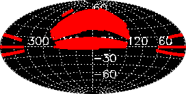
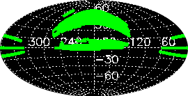

The Sloan Digital Sky Survey (see www.sdss.org for general information)
will map one-quarter of the entire sky and perform a redshift survey
of galaxies, quasars and stars. The DR4 is the fourth major data
release and provides images,
imaging catalogs, spectra, and redshifts for download.
About DR4 explains what is new
in DR4, and lists remaining or new caveats and subtleties in the data.
Please refer to the credits
page for our sources of funding, participating institutions, how
to acknowledge the use of SDSS data in your publications. Please also
note how to refer to SDSS sources in
your publications using the proper IAU
nomenclature for SDSS sources.
Imaging
| Footprint area |
6670 sq. deg. |
| Imaging catalog |
180 million unique objects |
| Data volume |
| images | 7.5 TB |
| catalogs (DAS, fits format) | 1.5 TB |
| catalogs (CAS, SQL database) | 3.0 TB |
|
Average wavelengths and magnitude limits
(95% detection repeatability for point sources) |
| u |
g |
r |
i |
z |
| 3551Å |
4686Å |
6165Å |
7481Å |
8931Å |
| 22.0 |
22.2 |
22.2 |
21.3 |
20.5 |
|
| PSF width |
1.4" median in r |
| Photometric calibration |
| r |
u-g |
g-r |
r-i |
i-z |
| 2% |
3% |
2% |
2% |
3% |
|
| Astrometry |
< 0.1" rms absolute per coordinate |
Spectroscopy
| Spectroscopic area |
4783 sq. deg. |
| Wavelength coverage |
3800-9200Å |
| Resolution |
1800 |
| Signal-to-noise |
>4 per pixel at g=20.2 |
| Redshift accuracy |
30 km/sec rms for main galaxy sample (from repeat observations) |
| Target magnitude limits for main samples |
Galaxies: Petrosian r <17.77
Quasars: PSF i <19.1 |
| Spectroscopic catalog |
849,920 spectra, classified into
| 565,715 Galaxies |
| 67,382 Quasars (redshift <2.3) |
| 9,101 Quasars (redshift >2.3) |
| 102,714 Stars |
| 50,373 M stars and later |
| 44,363 Sky spectra |
| 10,272 Unknown class |
|
| Data volume |
| calibrated spectra ("2d") | 51 GB |
| spectra, redshifts, line measurements ("1d") | 140 GB |
|
Previous data releases
For reference, we provide links to earlier data releases. The
current data release always provides both the largest sky coverage and
the highest-quality data and reductions.
This is version v4_20080930_1838 .
If you are using Netscape 4.x and see oversized fonts, please look at the workaround on the Credits page.

| News
DR6 is now available!
|

| SDSS DR4
Imaging Sky Coverage (Aitoff
projection of Equatorial
coordinates) |

| SDSS DR4 Spectral Sky Coverage (Aitoff
projection of Equatorial
coordinates) |
|
|
|
|
|
{kind=link}
{kind=link}